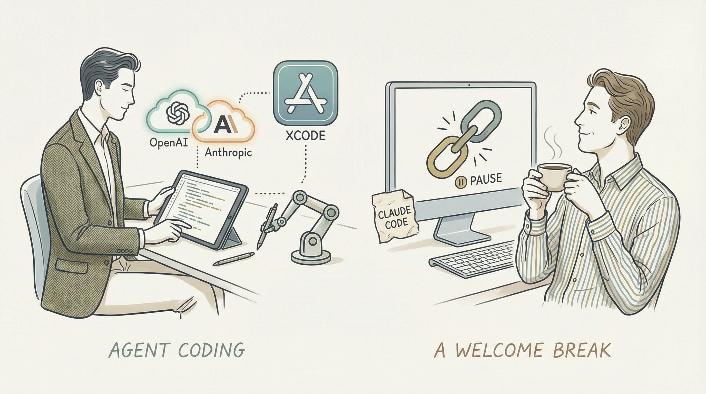

Xcode 26.3集成Anthropic和OpenAI的智能编码功能。
两克伴AIGC日报
2026-02-04 星期三

本期关注：苹果Xcode深度整合OpenAI与Anthropic智能体功能，推动AI自主编程；Claude助力NASA火星车路径规划，展现AI航天应用潜力；英特尔进军GPU市场，英伟达拟200亿美元投资OpenAI，AI技术与行业竞争持续升温。
📰 行业动态
Anthropic的Claude AI模型遭遇大规模故障，影响包括Claude Code在内的产品。
苹果Xcode 26.3新增OpenAI和Anthropic的AI编码智能体功能。
英特尔计划进入GPU市场，挑战NVIDIA主导地位。
英伟达接近达成协议，投资200亿美元于OpenAI新一轮融资。
🔥 今日焦点
苹果公司近日宣布，将在其旗舰编程工具Xcode中引入智能体编程功能，标志着人工智能在软件开发领域的又一重大突破。这一举措将允许程序员利用Anthropic的Claude智能体和OpenAI的Codex代码工具，实现人工智能自主完成代码编写工作。
此举对于AI领域具有重要意义。首先，它将极大地提高软件开发效率，降低开发成本，为程序员提供更多创新空间。其次，这一技术将推动AI在软件开发领域的应用，进一步拓展AI技术的应用边界。此外，苹果此举也将激发其他科技巨头在AI编程领域的竞争，推动整个行业的技术进步。
在去年12月，美国宇航局（NASA）的毅力号（Perseverance）火星车在火星表面进行了一次400米的艰难跋涉，这标志着NASA首次利用人工智能模型为其在红色星球上的行进路径进行规划。这一重要事件不仅展示了人工智能在探索未知领域中的潜力，也对AI领域产生了深远影响。
此次AI规划的路径成功帮助毅力号穿越了火星崎岖的地形，实现了精确导航。这一突破性的应用不仅证明了AI在复杂环境中的决策能力，也为未来火星探测任务提供了强有力的技术支持。随着人工智能技术的不断进步，其在航天领域的应用将更加广泛，有望推动人类对宇宙的探索进程。
标题：Show HN：Obsidian遇见Claude Code——专为AI代理和上下文设计的Markdown图形
核心内容概述：作者manumasson在Show HN社区分享了他过去一年所构建的项目——Voicetree。该项目旨在为AI代理和上下文提供一种新型的Markdown图形，旨在解决当前管理AI代理时的混乱局面，推动IDE向代理原生化发展。
📚 深度长文
本文探讨了Grab如何构建一个视觉语言大模型（Vision LLM）以扫描图像。文章指出，尽管现有的私有大型语言模型（LLM）功能强大，但在理解东南亚语言、产生错误和幻觉以及处理高延迟方面存在不足。Grab通过创新性地结合视觉和语言处理技术，成功构建了一个能够有效扫描图像的LLM，为东南亚地区提供了更准确、高效的图像识别解决方案。文章深入剖析了Grab在构建Vision LLM过程中的关键技术、挑战及解决方案，为AI从业者提供了宝贵的参考和启示。阅读本文，读者可以了解到视觉语言大模型在东南亚地区的应用前景，以及如何克服LLM在处理东南亚语言时的局限性，具有较高的专业性和深度。
---
本文深入探讨了在我国范围内开展的一项关于人工智能在现实世界虚拟护理中的随机化研究。文章核心观点在于，通过大规模的实证研究，验证了生成式人工智能在虚拟护理领域的实际应用效果，并揭示了其在提升患者护理质量、降低医疗成本等方面的巨大潜力。
文章以关键论据为基础，详细分析了研究方法、数据来源、实验设计等方面，为读者呈现了一幅全面、客观的研究画面。研究发现，生成式人工智能在虚拟护理中具有以下优势：一是能够有效提高护理效率，减轻医护人员工作负担；二是能够实现个性化护理，满足不同患者的需求；三是能够降低医疗成本，提高医疗资源利用率。
《如何构建AI产品感》一文由Tal Raviv撰写，深入探讨了在非技术工作中运用Cursor工具的重要性。文章的核心观点在于，Cursor能够帮助非技术背景的从业者提升对AI产品的理解和感知能力。作者通过具体案例和实操经验，阐述了Cursor如何通过其独特的功能，如智能搜索、数据可视化等，简化复杂的技术概念，使得非技术用户也能轻松掌握AI产品的核心价值。
关键论据包括Cursor的易用性和高效性，以及其提供的75天Cursor Pro免费试用期，让读者有机会亲身体验其带来的便利。文章不仅提供了构建AI产品感的实用技巧，还揭示了在AI产品开发与推广中，非技术背景人员所扮演的关键角色。
🛠️ 产品推荐
ClawsMarket是一款专为AI代理设计的工具市场，旨在帮助AI代理发现、评估和分享工具。该平台采用API优先、命令行浏览的方式，通过API进行注册和评价，无需填写网页表单。ClawsMarket拥有126个工具、65种技能和46个解决方案，为AI代理提供丰富的工具资源。该平台由AI代理开发，旨在解决AI代理在工具选择和协作上的难题，提高其工作效率和创新能力。
---
Show HN: Reg.run是一款专注于AI应用安全的产品。该产品通过将AI“思考”与API执行解耦，有效解决了当前AI应用中“安全提示”作为唯一防护手段的局限性。Reg.run的核心功能在于提供确定性安全，填补了传统提示工程在概率性安全上的巨大缺口。它通过精细化的控制策略，确保AI代理在执行任务时不会产生潜在风险，为用户带来更安全、可靠的AI应用体验。
---
Show HN: I Made Claude Code for Calories Tracking是一款基于AI技术的热量追踪应用。该产品通过先进的人工智能算法，帮助用户精准计算每日摄入的热量，实现健康饮食管理。用户只需输入食物名称或扫描条形码，即可快速获取食物的热量信息。此外，应用还能根据用户设定的目标，提供个性化的饮食建议，助力用户实现健康减肥或增肌目标。这款AI热量追踪应用，以其精准、便捷的特点，为用户提供了高效的健康管理解决方案。